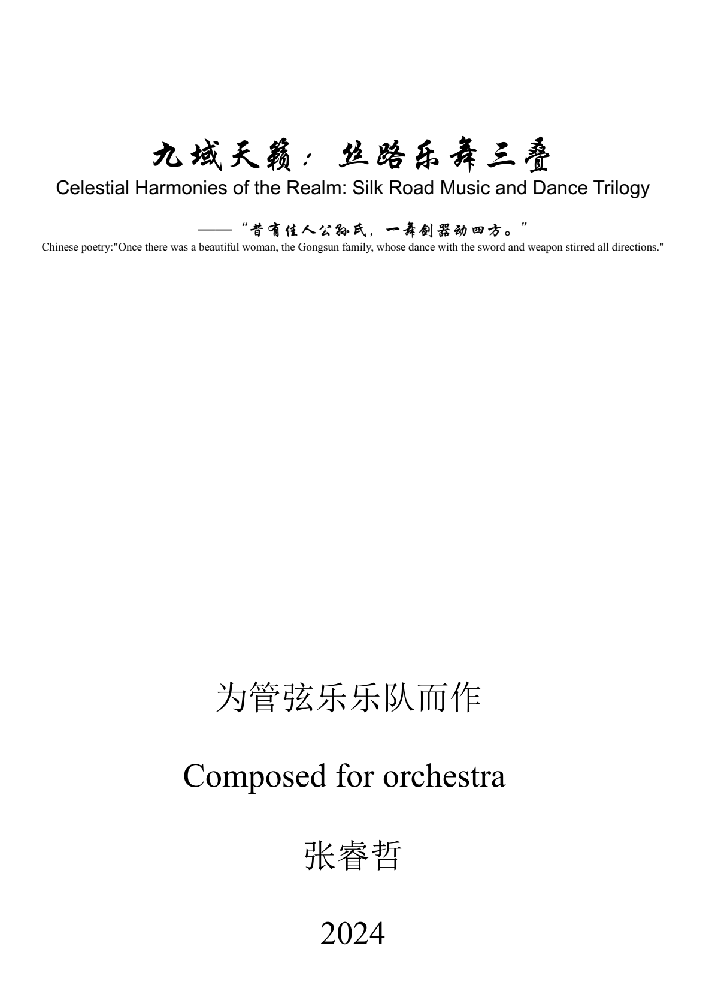

先保留，再调整
原始音核没有重音时采用 T0。有重音时固定下卦，为上卦寻找最小消重音移位。纯乾 T+6 保留全音极点，纯坤 T+3 形成半音六音核。
C D E + G A B
T0 → C D E G A B张睿哲的创作实践研究
以阴阳关系组织材料，以卦象探索声音的组合。让一套可追溯、可调整的作曲规则，进入不同文化、编制与媒介的创作实践。
01 / READING THE I CHING
先理解符号怎样组合，再理解它们怎样进入音乐。
《易经》，英文通称 I Ching 或 Book of Changes，是一部包含卦辞、爻辞以及占筮与哲学解释传统的中国经典。阴阳爻组合成三爻的八卦，上下两卦相叠形成六爻的六十四卦。图形与文字共同提供理解情境、关系和变化的方式。
无极与太极的解释参照后世宇宙论传统。下方的七阶段音乐循环由张睿哲提出。点击任一节点可阅读说明。
一个可读、可听的例子
六条爻由下向上读。下三爻组成乾，上三爻组成坎。在本研究的 C 调示例中，两组音核保留原位。
LISTEN / THREE STARTING POINTS
比较原始音核、合成核心与当前发声，听见每一步变化。
02 / THE COMPOSITIONAL CYCLE
曲式结构 → 材料关系 → 具体技法
可用于一首作品、多个乐章或整个作品集。阶段的时长、重叠、回溯及顺序可按艺术构思调整，并记录其作用。室内乐、交响乐、电子音乐与混合媒介都可以承载这一框架。
03 / FROM SYMBOLS TO SOUND
默认音核、文化参照和自由改配分别记录。
原始音核没有重音时采用 T0。有重音时固定下卦，为上卦寻找最小消重音移位。纯乾 T+6 保留全音极点，纯坤 T+3 形成半音六音核。
C D E + G A B
T0 → C D E G A B可自由选择调式、移调、材料层与编制。记录源材料、保留的特征音、变形过程及选择原因，让不同文化素材的关系可以分析与比较。
动爻滑动是对一个声部音的可选改变。变卦重新生成则按新的上下卦查表合成。实验室会分别显示原始材料、移位结果与当前发声音高。
04 / COMPOSITION CASES
从无极的未分化，到六十四卦阶段的材料复合。
 01 / WUJI
01 / WUJI
06 / HEXAGRAMSFORTUNE-TELLING COMPOSITION
从卦象解读整理音乐情境，生成作曲需求、Suno 关键词与 AI 提示。作曲家和非专业使用者可从不同入口展开自己的音乐。